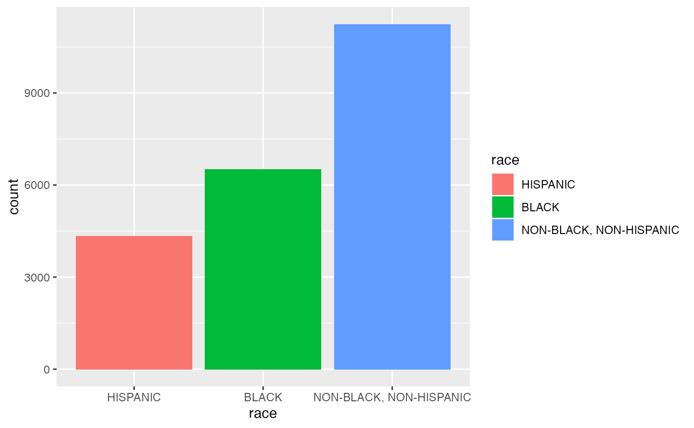

This vignette provides a brief example of the usage of wages_hs_dropuot data.
Here, we would like to visualize the demographic profile of high school dropout cohort in the NLSY 1979 by gender and race.

In this section, we would like to compare the summary statistics of high school dropouts , those who completed high school without being dropped out, and those who never attended high school.
High school dropouts cohort
summary(wages_hs_dropout$mean_hourly_wage)
#> Min. 1st Qu. Median Mean 3rd Qu. Max.
#> 0.020 4.680 7.262 9.266 11.546 192.300Completed high school without being dropped out cohort
hs_never_dropout <- wages_hs2020 %>%
mutate(dob = 1979 - age_1979,
age_hgc = yr_hgc - dob) %>%
filter(hgc == "12TH GRADE" & age_hgc < 19)
summary(hs_never_dropout$mean_hourly_wage)
#> Min. 1st Qu. Median Mean 3rd Qu. Max.
#> 0.230 4.535 7.000 9.298 11.000 70.000Never attended high school cohort